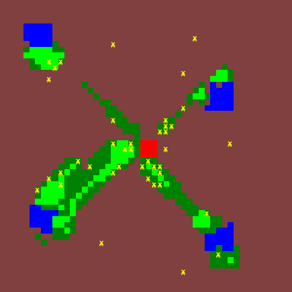
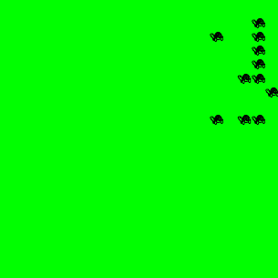
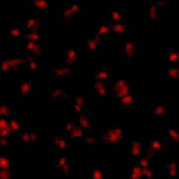
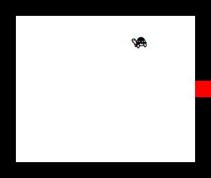
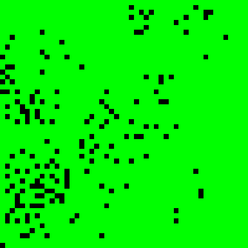
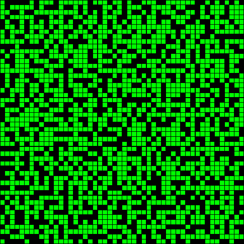
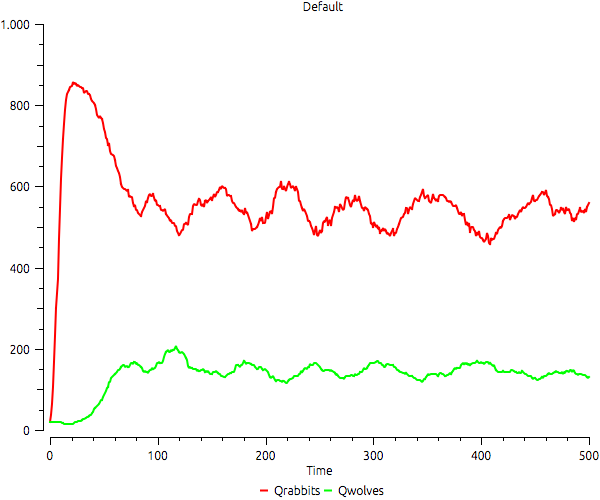
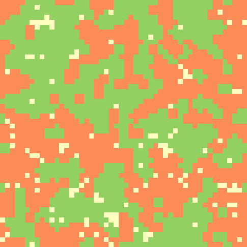
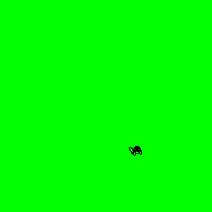
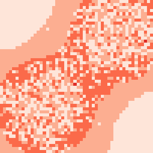

Models
| Ants | A colony of ants bringing food to their nest. |
| Disease | A SIR model implemented with agents. |
| GrowingSociety | Model where a given Society grows, filling the whole space. |
| Heatbugs | Heatbugs is an agent-based model inspired by the behavior of biological agents that seek to regulate the temperature of their surrounding environment around an optimum level. |
| Labyrinth | A labyrynth, where agents move randomly from a given entrance until an exit point. |
| LifeCycle | A model where agents reproduce and die by age. |
| Overpopulation | Model where Agents die by overpopulation. |
| PredatorPrey | Predator-prey dynamics. |
| Schelling | Schelling's segregation model. |
| SingleAgent | A single agent moving around randomly. |
| Sugarscape | Sex, Culture, and Conflict: The Emergence of History. |
Ants

A colony of ants bringing food to their nest. Ant colonies are very interesting entities because of their capacities to collectively achieve complex decisions based on simple behavioural rules and the use of local information and indirect communication. This behaviour is useful to researches from different fields, especially in Swarm Robotics and computational intelligence. Implemented by Bernardo Dornellas de Mendonca Martins dos Reis (more information available at http://www.terralab.ufop.br/dokuwiki/doku.php?id=terralab:curso:envsoft:finalproject:ant1). Original authors: Fesseha Belay & Javier Morata.
Parameters
- dimension: Space dimensions. A number with 50 as default value.
- finalTime: Final simulation time. A number with 450 as default value.
- initialFood: A number with 100 as default value.
- rateDiffusion: A value in the set {1, 2, 3, 4, 5, 6, 7, 8, 9, 10} with 1 as default value.
- rateEvaporation: A number of at least 1e-06 and at most 0.999999 with 0.2 as default value.
- societySize: A number of at least 10 and at most 500 with 10 as default value.
Disease
A SIR model implemented with agents. It exemplifies the number of additional decisions a modeller must take to switch from system dynamics to agent-based modeling.
Parameters
- contacts: Number of contacts. The default value is 6.
- duration: Disease duration. A number with 2 as default value.
- finalTime: Final simulation time. A number with 30 as default value.
- probability: Probability to infect a contact. A number with 0.25 as default value.
- quantity: Number of agents. The default value is 1000.
GrowingSociety

Model where a given Society grows, filling the whole space. Agents reproduce with 20% of probability if there is an empty neighbor.
Parameters
- dim: The x and y dimensions of space.
- finalTime: The final simulation time.
- quantity: The initial number of Agents in the model.
Heatbugs

Heatbugs is an agent-based model inspired by the behavior of biological agents that seek to regulate the temperature of their surrounding environment around an optimum level. This model demonstrates how agents can organize themselves within a population. The agents can detect and alter the environmental conditions in their neighborhood, though they can only interact with other agents indirectly. Although this model does not match the behavior of any specific organism, it can be used to show how emergent behavior can arise as a result of different rules that govern the behavior of agents. The bugs (agents) exist in an environment composed of a grid of square patches. Each bug can move to another, more suitable patch, as long as it is not occupied by another bug. Each bug has an ideal temperature, though it is not the same for every bug. The bugs emit a certain amount of heat into the environment at each time step. This heat slowly disperses throughout the environment, though some is lost to cooling. The larger the discrepancy between the bug's patch temperature and its ideal temperature, the more unhappy it is. If the bug is not happy in its patch, it will move to an adjacent empty patch that most closely resembles its ideal temperature. A patch that is too warm will cause the bug to move to the coolest adjacent empty patch. In the same way, a patch that is too cold will cause the bug to move to the warmest adjacent empty patch. However, as the bugs only search their immediate neighborhood, it cannot be guaranteed that the bugs will always move to the most suitable patch available. The first version of this implementation was developed by Ondrej and Linda, as final work for Environmental Modeling course in Erasmus Mundus program, Munster University, 2014. It still needs further development.
Parameters
- diffusionRate: The rate of amount emitted by agent in each iteration. Default value is 0.9.
- dim: The x and y dimensions of space.
- evaporationRate: The speed of heat loss of each cell. This occurs in every iteration, for every cell. Default is 0.04.
- finalTime: The final simulation time.
- idealTemperature: Upper and lower edges of ideal temperature. Default ranges from 45 to 60.
- initialCellTemperature: Initial temperature of each cell. Default is 10.
- outputHeat: Upper and lower edges of amount of heat emitted by agent in each iteration to its neighbors. Default ranges from 10 to 20.
- quantity: The initial number of Agents in the model.
- randomMoveChance: Probability to move randomly, instead of choosing coolest/hottest neighbor. Default is 0.5. with the number of Agents along the simulation should be drawn.
- temperature: Sets minimum and maximum extend of legend. Default ranges from 0 to 150.
Labyrinth

A labyrynth, where agents move randomly from a given entrance until an exit point. There are some available labyrynths available. See the documentation of data.
Parameters
- finalTime: The final simulation time.
- labyrinth: The spatial representation of the model. The available labyrinths are described in the data available in the package. They should be used without ".labyrinth" extension. The default pattern is "room".
- quantity: The initial number of Agents in the model.
LifeCycle

A model where agents reproduce and die by age. Each Agent starts with age zero. From age 15 until 30 they have 30% of chance of reproducing if there is an empty neighbor cell. Agents have 5% of probability of dying each time step after age 20.
Parameters
- chart: A boolean value indicating whether a Chart with the number of Agents along the simulation should be drawn.
- dim: The x and y dimensions of space.
- finalTime: The final simulation time.
- quantity: The initial number of Agents in the model.
Overpopulation

Model where Agents die by overpopulation. Each Agent breeds with a probability of 30% and die if there are more than three Agents in the neighborhood.
Parameters
- dim: The x and y dimensions of space.
- finalTime: The final simulation time.
- quantity: The initial number of Agents in the model.
PredatorPrey

Predator-prey dynamics.
Parameters
- dim: The x and y dimensions of space.
- finalTime: The final simulation time.
Schelling

Schelling's segregation model. In 1971, the American economist Thomas Schelling created an agent-based model that might help explain why segregation is so difficult to combat. His model of segregation showed that even when individuals (or "agents") didn't mind being surrounded or living by agents of a different race, they would still choose to segregate themselves from other agents over time! Although the model is quite simple, it gives a fascinating look at how individuals might self-segregate, even when they have no explicit desire to do so. A small preference for one's neighbors to be of the same color could lead to total segregation. In Schellinga model, initially black and white families are randomly distributed. At each step in the modeling process the families examine their immediate neighborhood and either stay put or move elsewhere depending on whether the local racial composition suits their preferences. The procedure is repeated until everyone finds a satisfactory home (or until the simulator’s patience is exhausted).
Parameters
- dim: The x and y dimensions of space. The default value is 25.
- finalTime: The final simulation time. The default value is 500.
- freeSpace: The percentage of space that is not filled with any agent along the simulation. The default value is 25.
- preference: What is the minimum number of neighbor agents be like me that makes me satisfied with my current cell? The default value is 3.
SingleAgent

A single agent moving around randomly.
Parameters
- dim: The x and y dimensions of space.
- finalTime: The final simulation time.
- quantity: The initial number of Agents in the model.
Sugarscape

Sex, Culture, and Conflict: The Emergence of History. Chapter 3 of Joshua M. Epstein & Robert Axtell, Growing Artificial Societies: Social Science from the Bottom Up. This model was implemented by Andre R. Goncalves and Frederico F. Avila.
Parameters
- finalTime: The final simulation time.
- initPop: The initial number of Agents in the model.